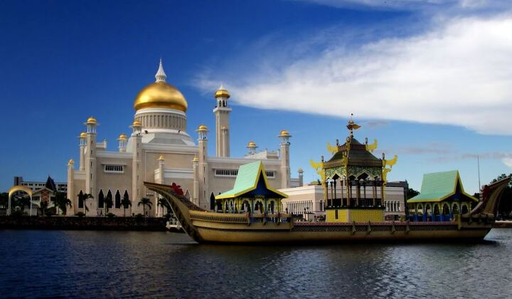
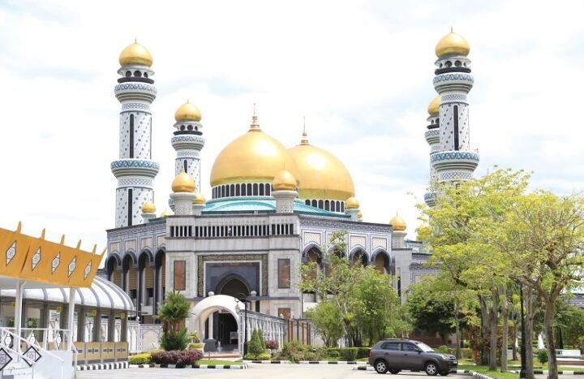
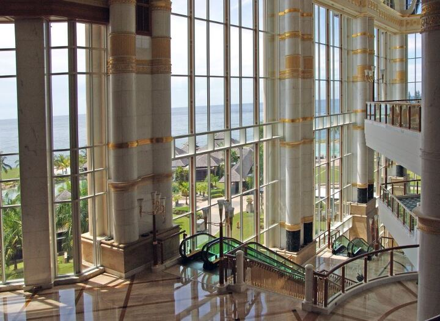
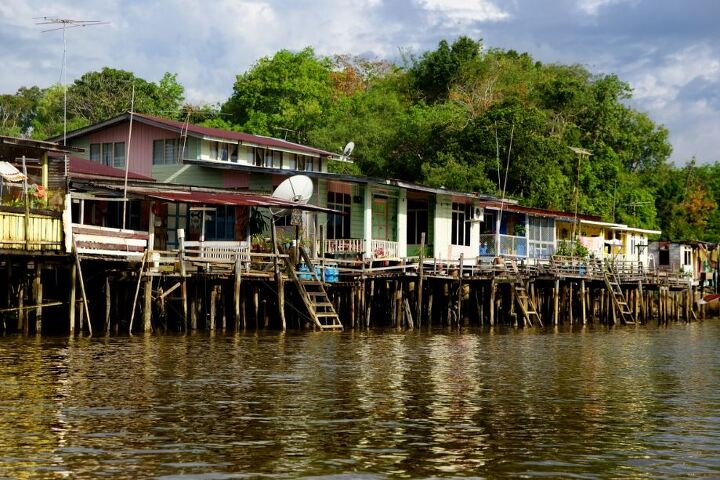
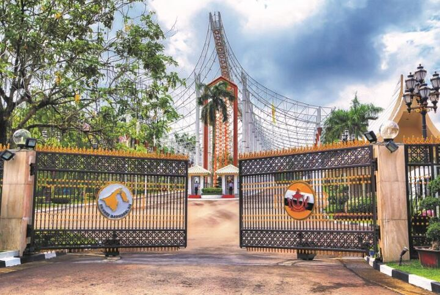
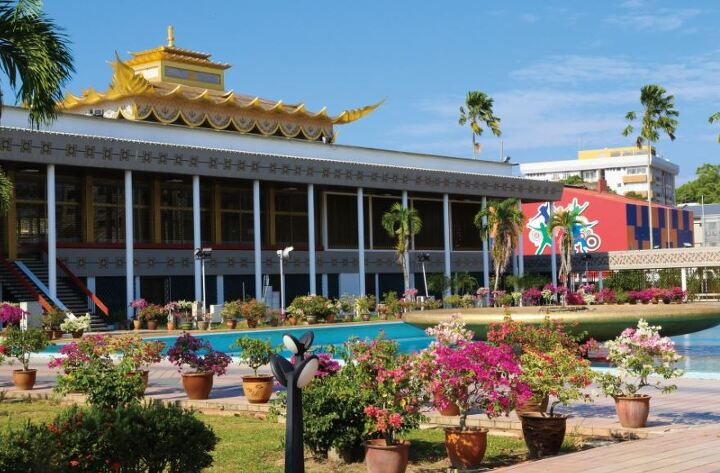

다 같은 동남아의 분위기와 볼거리에 지겨워졌다면 주목! 너무 많은 관광객들에 여행마저 지쳤다면 주목!
동남아의 아마존이라 불릴 만큼 국토의 대부분이 밀림이라 깨끗한 공기 속 힐링을 할 수 있으며 풍부한 자원으로 세계에서 가장 부유한 나라 중 하나로 황금으로 뒤덮인 모스크가 거리 곳곳에 있는 브루나이.
최근 떠오르는 평화롭고 안전한 이색 여행지 브루나이를 소개합니다.
브루나이는 어떤 나라 일까?
브루나이는 말레이시아 옆에 있는 작은 나라로 정식 명은 브루나이 다루살람입니다.
왕정 군주제인 이곳은 석유와 천연가스가 풍부하여 1인당 GDP가 세계 4위인 부자나라인데요. 그렇기 때문에 국민들은 세금을 내지 않으며 교육비 무료, 60세부터 연금 지급 등 복지가 매우 좋아요. 또한 국토의 약 70%가 밀림이기 때문에 '동남아의 아마존'이라고 불리며 미세먼지 없는 공기가 맑고 깨끗한 나라 2위에 선정되었습니다.
브루나이는 이슬람 국교로 왕이 통치하는 이슬람 왕정국가여서 이슬람 종교의식이나 관습을 존중해야 해요. 종교나 왕실에 대한 모욕이나 비난 행위는 절대 삼가야 하며, 이를 어긴 경우에는 공안사범으로 비교적 엄한 처벌을 받을 수 있답니다. 또한 종교 특성상 주류의 판매 및 공공장소에서의 음주는 금지하고 있으며, 라마단 기간 중에는 공공장소에서 일반 음료를 마시는 것도 금지하고 있답니다.
- 브루나이 여행정보
- 위치 아시아 동남부
- 수도 반다르 스리 브가완
- 언어 말레이어, 영어, 중국어
- 시차 한국보다 1시간 느림
- 화폐 1 브루나이 달러(BND)
- *싱가포르 달러와 1:1 가치, 출발 전 미국 달러 or 싱가포르 달러로 환전해 가세요.
- 기후 평균 27도 고온다습
- 전압 220V, 50hz (한국과 콘센트가 달라서 어댑터 필수)
- 비자 한국인은 무비자로 입국이 가능
브루나이 가볼 만한 곳
-
오마르 알리 사이푸딘 모스크

브루나이를 대표하는 건축물인 술탄 오마르 알리 사이푸딘 모스크
제28대 술탄 오마르 알리 사이푸딘을 기리기 위해 지어진 모스크로 28t의 순금으로 만들어진 지붕이 특히나 눈에 띄는데요, 지붕의 크기만 무려 52m로 시내 어디에서나 볼 수 있어요.
술탄 오마르 알리 사이푸딘 모스크는 이탈리아 건축가가 설계한 건물로 이탈리아의 르네상스 양식이 합쳐져 독특한 외관을 자랑해요. 인공호수에 떠있는 석조 배는 유럽 황실의 유람선을 모티브로 하여 만든 것으로 더욱 모스크를 신비하게 해 줍니다.
기도 시간을 피해 내부 관람을 할 수 있는데, 짧은 옷은 대여해주는 옷을 입고 들어가야 하며 신발을 벗은 뒤 손과 발을 깨끗이 씻고 관람이 가능하답니다.
*입장시간 : 일-수 08:00-17:30 (기도시간 제외)
-
자메 아스르 하사날 볼키아 모스크

볼키아 국왕의 즉위 25주년을 기념하기 위해 세워진 자메 아스르 하사날 볼키아 모스크
자메 아스르 하사날 볼키아 모스크는 브루나이 최대 규모 모스크로 한국의 한 기업이 건설에 참여하여 더욱 눈길이 가는데요. 건물의 전체가 타일과 황금 도금으로 이루어져 있으며 내부는 호화로운 샹들리에와 최고급 대리석으로 장식하였답니다.
이곳 역시 기도시간에는 입장을 할 수 없으며 입장 시 신발을 벗고 의상을 대여한 뒤 관람을 할 수 있어요.
자메 아스르 하사날 볼키아 모스크는 야경이 아주 멋지기 때문에 오후에 가서 내부 관람을 한 뒤 모스크의 야경을 보는 것을 추천합니다.
-
엠파이어 호텔

세계 단 2군데밖에 없는 7성급 호텔 엠파이어 호텔
황금의 나라라는 명성에 걸맞게 황금과 크리스털로 장식한 벽과 기둥 장식이 눈을 사로잡는 앰파이어 호텔. 원래 브루나이를 방문한 국빈들을 위해 만들어졌지만 일반인들에게 개방을 하며 호텔이 되었답니다.
모든 객실이 일반 호텔의 디럭스급 이상인 데다 최고급 골프 코스로 유명한 컨트리클럽과 수영, 카약, 패들보드 등 다양한 액티비티를 즐길 수 있는 인공 비치풀, 라운지에서 즐기는 고급스러운 에프터눈 티 등 럭셔리한 휴양을 즐기기 제격이랍니다.
-
캄퐁 아에르 수상가옥

브루나이 수도에 있는 세계 최대 수상가옥 집단마을 캄퐁 아에르 수상가옥
옛 브루나이를 대표하는 거주 지역으로 현재도 약 3만 명의 사람들이 거주하고 있어요. 한때 여행자들에게 동양의 베네치아라고 불리기도 하였으며 병원, 경찰서, 소방서는 물론 각종 편의시설이 있답니다.
이곳 주민들은 모터보트를 타고 다니며 관광객은 보트를 타고 자연과 수상가옥 관광이 가능하니 뱃사공들과 적절한 흥정을 하여 모터보트 관광을 즐겨보세요.
-
이스타나 누룰 이만

국왕이 거주하는 왕궁으로 세계 최대의 거주/행정 목적의 궁전 이스타나 누룰이만
약 96,000㎡의 어마어마한 넓이로 전체 방만 1,800여 개, 257개의 화장실, 수영장과 110대의 차를 댈 수 있는 주차장이 있으며, 수많은 샹들리에와 엘리베이터 등 브루나이의 어마어마한 국가의 자본력을 볼 수 있답니다.
평소 일반인에게 공개하진 않지만 브루나이 최대 축제인 하리라야 기간 중 3일 동안 국왕의 신년 인사를 위해 공개되는데요. 국왕과 왕족들은 하리라야 기간 동안에 수만 명의 방문객들을 맞이하게 되는데 브루나이 국민들은 물론이고 외국 관광객들에게도 국왕에게 인사할 수 있는 기회가 주어진다고 해요.
-
로열 리갈리아 센터
브루나이의 왕실 역사를 볼 수 있는 박물관 로열 리갈리아 센터
전시관에는 대관식에 사용한 화려한 금, 은으로 장식된 마차와 브루나이 왕실의 각종 예술품, 훈장 등의 소장품들을 볼 수 있어요. 세계 각 나라의 선물도 있는데 우리나라 신라시대 금관은 물론 김대중 전 대통령의 친필 서명이 전시되어 있답니다.
*무료입장은 가능하지만 들어갈 때 신발을 벗어야 하고 소지품과 카메라는 입구에 맡겨야 해요.
-
울루 템부롱 국립공원

동남아의 아마존이라 불리는 브루나이의 청정 자연 울루 템부롱 국립공원
수도 반다르 스리 브가완에서 약 1시간 거리에 있으며 희귀한 코주부원숭이의 서식처이기도 한데요,
정글 한가운데 있는 70m 높이의 첨탑을 오르면 감탄이 절로 나오는 보루네오 섬의 풍경이 한눈에 들어온답니다. 투어를 마칠 때쯤엔 중간지점에서부터 튜브를 타고 내려올 수 있고 닥터피쉬가 있는 호수에서 색다른 체험을 할 수 있어요.
국립공원으로 가기 위해 투어를 신청해야 하는데 입장 인원과 시간이 제한되어 있으니 꼭 예약을 통해 투어를 가야 한답니다.